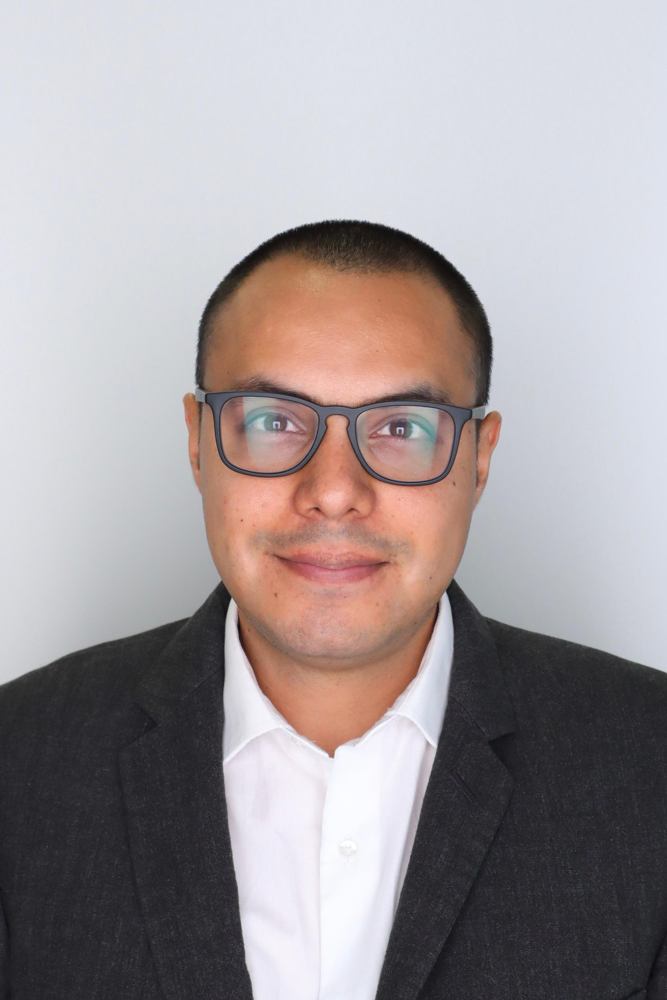

Bryam Xavier Astudillo Carpio
Structural Engineering Ph.D. Candidate at
Stanford University
Bryam Astudillo is a Graduate Research Assistant specializing in Structural Engineering at Stanford University. With a strong focus on seismic performance and nonlinear modeling of structures, Astudillo is passionate about Performance-Based Earthquake Engineering and Seismic Resilience. His current research centers on advancing the design of high-performing structures using strongback frames and force-limiting connections. He has gained valuable experience in numerical simulation and full-scale testing, including shake-table testing of a 4-story building at the E-Defense shake table in Japan.
Beyond engineering, Bryam enjoys programming, playing soccer, and spending time with family and friends.